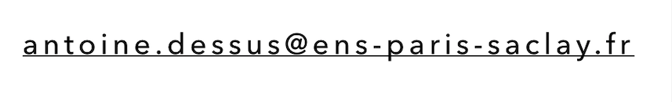

Contact
Work Experience
| 2021-pr | “Mechanistic, structural and functional characterisation of VPS34 activators”, Protein & Nucleic Acid Chemistry Division, MRC Laboratory of Molecular Biology, Cambridge, UK. Dir. Dr. Roger Lee Williams FRS FMedSci (9 months) |
| 2021 | “Regulation of small GTPase Rac1 by the ubiquitin ligase Hace1” Team Biologie Structurale des petites GTPases at the LBPA, ENS Paris-Saclay, France. Dir. Dr. Agata Nawrotek-Maalouf (6 months) |
| 2019 | “Differential analysis of tumoral genes expression” TIMC-IMAG laboratory, Grenoble, France. Dir. Dr. Daniel Jost . Work on a R package (3 weeks) |
| 2018 | “Characterisation of nanobodies-membrane protein interaction” Institut de Biologie Structurale, Grenoble, France. Dir. Pr. Eva Pebay-Peyroula. Experimental techniques used : ELISA, SPR, Western Blot, affinity chromatography, radioactive phosphate transport test (6 weeks) |
| 2017 | “In vitro nucleosomes reconstitution” Laboratoire de Physiologie Cellulaire et Végétale , CEA Grenoble, France. Dir. Dr. Chloe Zubieta. Experimental techniques used : SDS-PAGE, Western Blot, affinity chromatography, SEC (4 weeks) |
Education
Certificates and Schooling
| 2019–2021 | MSc in Structural Biology both at the Université Paris-Saclay and at the ENS Paris-Saclay, obtained with high distinction |
| 2019 | Biology bachelor (Licence) at the Grenoble Alpes University, International programm, obtained with high distinction (rank 1/173) |
Languages
| French: Native speaker |
| English: CAE Certified C2 (fluent) |
| German: Certified B1 Level (independent user, good working knowledge) |
Knowledge
|
Communications
| Dessus, A. (2021). Regulation of Small GTPase Rac1 by ubiquitinylation. Communication to the “membrane transporters” team, Institut de Biologie Structurale, Grenoble, France |
| Dessus, A. (2018). Inhibition of the APT by antibodies. Communication to the “membrane transporters” team, Institut de Biologie Structurale, Grenoble, France |
Additional Skills
| Adept in R and ImageJ, knowledgeable in Pymol and CCPNMR. |
| Laboratory techniques:
ELISA, PCR, sous-clonage, purification sur colonne, Western blots, SDS-PAGE. |
| Total of 18 months of internship and 500 hours of praticals in biology. |
Other Achievements
| 2017 | Musical studies diploma (oboe), conservatoire d’Aix-les-Bains, France |